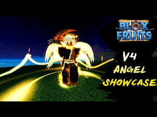
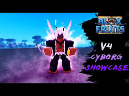
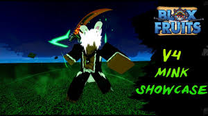
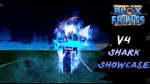
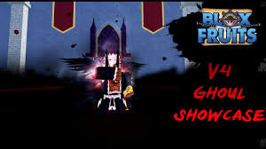
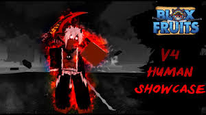

There are currently 6 distinct races in Blox Fruits: Angel, Cyborg, Human, Ghoul, Mink, and Shark with the Mink race being renamed to Rabbit. Angel v4 lets you have an aura that people take damage from you can also fly. Mink/rabbit race v4 you can run really fast and you get a lot of energy. Shark race v4 you can swim in water and you get a big amount of damage reduction. Cyborg v4 race spawns orbs when hitting enymies and then damages them and getting rid of there insttinct cyborg is one of the best races for pvp. Ghoul v4 race has a lot of abilities you can upgrade it to have crows surround you and then they make anyone around you blind. Human v4 race gives you a damage buff.





